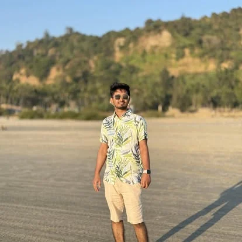

Built on curiosity.
Driven by purpose.
I am Md Humaion Kabir Mehedi, a lecturer at UCSI University Branch Campus Bangladesh and Uttara University, a research assistant at BRAC University, and an IEEE member working across computer vision, medical image analysis, and natural language processing.
Connect with me ↗ RESEARCH • LEARN • BUILD
RESEARCH • LEARN • BUILDResearch that stays close to real problems.
My academic background is in computer science and engineering at BRAC University, where my research and learning have centered on machine learning, deep learning, and applied artificial intelligence.
Through research projects and collaboration, I have explored medical imaging, explainable predictions, efficient visual recognition, and Bengali natural language processing. I also teach as a lecturer at UCSI University Branch Campus Bangladesh and Uttara University and have served as a Research Assistant at BRAC University since 14 April 2026. I am an IEEE member and value student mentorship and the open exchange of research ideas.
Update your profile photo.
Choose your picture to preview it on this website. Download the optimized photo, then replace assets/img/profile.webp in your GitHub repository to publish the change for everyone.
Square, automatically center-croppedJPG, PNG or WebP, up to 10 MB. The original stays on your device.
Select a photo to get started.
Publishing step: Upload the downloaded profile.webp to assets/img/ on GitHub, replacing the existing file. Commit your changes and refresh the site after deployment. This editor does not upload the image to the server.
Life, in moments.
A few snapshots from academic milestones and life outside the classroom.

Academic foundation.
Formal education and research training in computer science and engineering.
Building a foundation in computer science.
My studies at BRAC University shaped my interest in developing useful and interpretable intelligent systems.
Learning by doing.
Selected research roles across university labs and applied research projects.
Knowledge, shared.
Current lecturer roles at UCSI University Branch Campus Bangladesh and Uttara University, alongside earlier instruction, mentoring, and tutoring.
Awards & honors.
Selected academic and research recognitions.
Membership & leadership.
IEEE professional membership, IEEE CIS chapter service, and peer-learning leadership.
Interested in what I'm building?
Browse research themes and selected publications, with published journals ordered latest first.
Explore research ↗